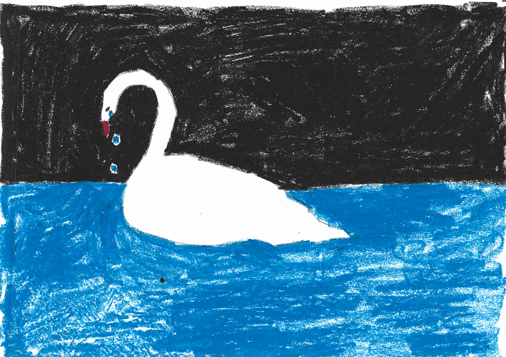
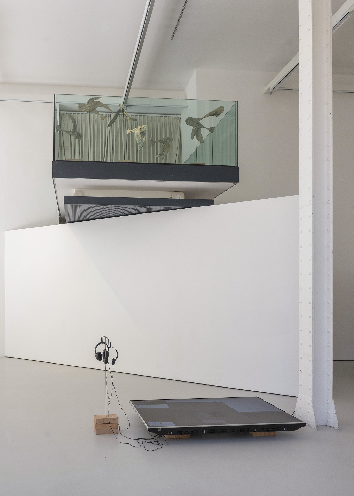
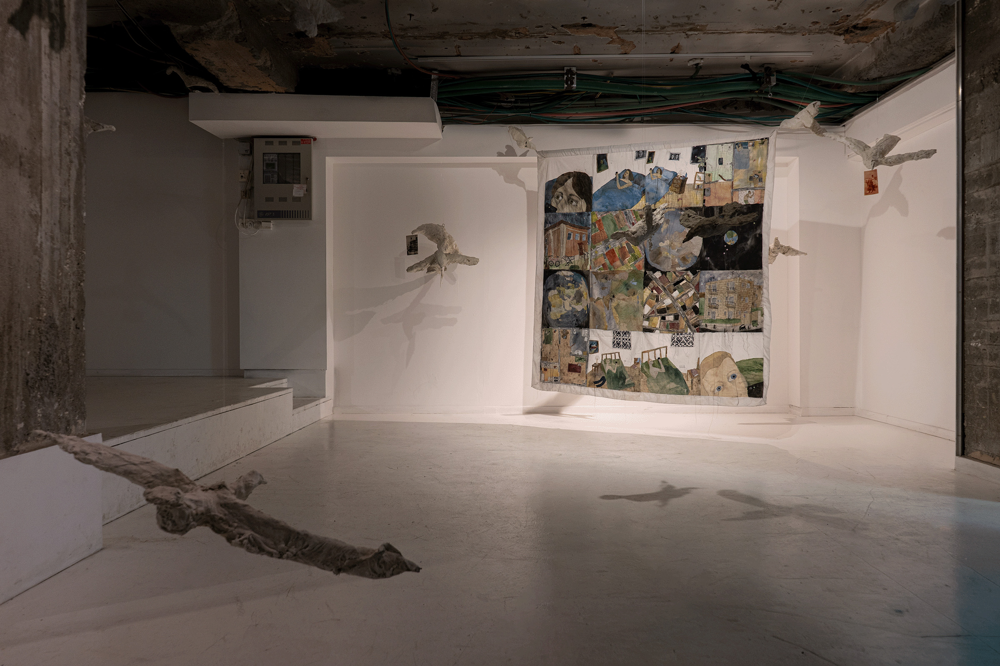
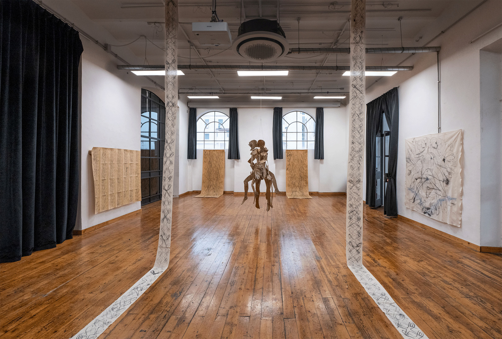
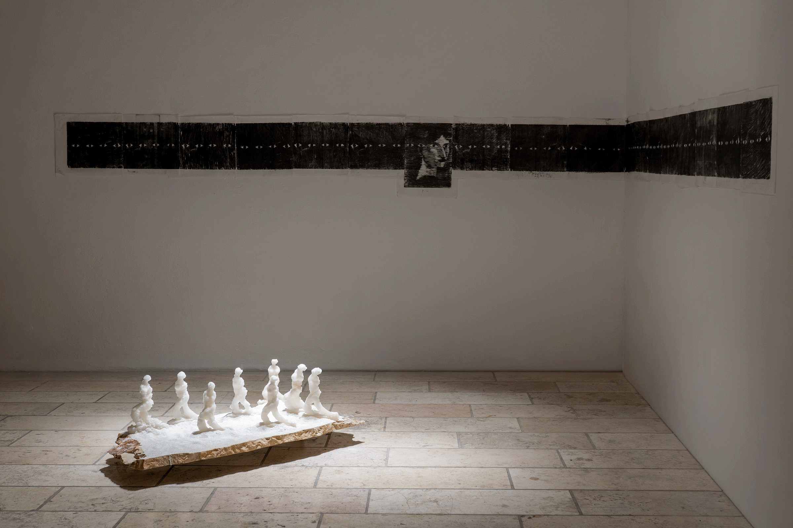
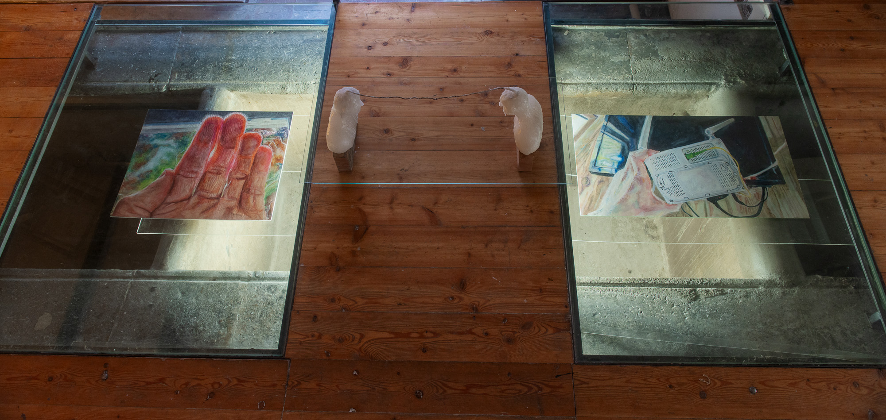
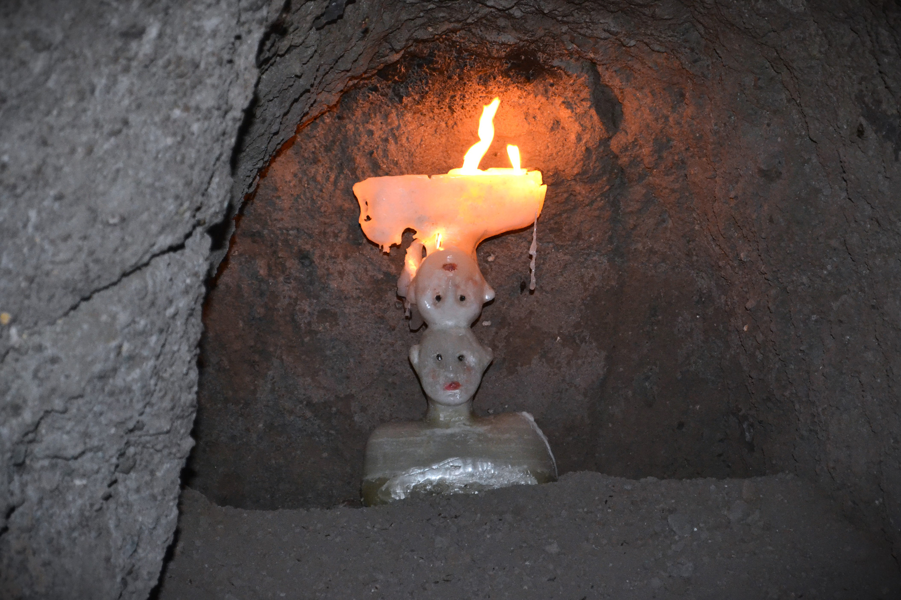
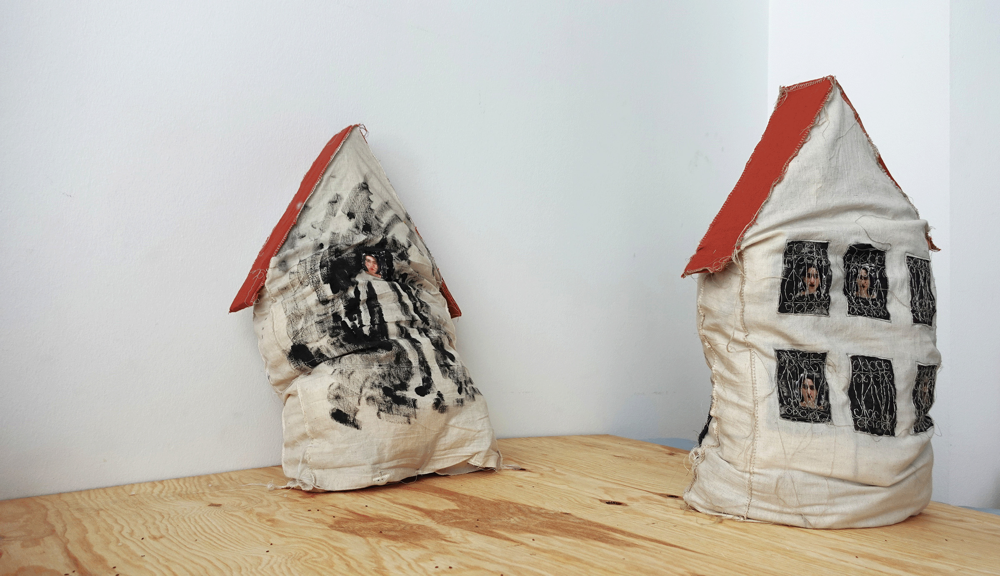

01
Girls Like Us Don't Cry












Daria Shoshani (b.1998) lives in Vienna. Her practice includes mainly sculpture, painting, drawing and video. Her works are a confessional research of how immaterial aspects such as ephemerality, heritage, politics and location interact with the material figure. The interaction is retelling narratives by intertwining the mundane with the oneiric. The works recruit a childish, intuitive and dynamic visual language, often contrasting form and substance.
She has participated in various exhibitions in recent years e.g MAXXI museum (2024), Fondazione Pastificio Cerere (2024), Wasserwasser Vienna (2025), and Barbur Gallery (2025). Her duo artist book done with the painter Lorenz Kunath Long Time No See was published with Vienna Printing Cooperative (2025), other works were published with Granata, Portfolio magazine, Dito Publishing. She did her BA in the Hebrew University of Jerusalem in the department of general and comparative literature (2023), and graduated her MFA with excellence in the department of sculpture and installation in Rome University of Fine Arts (2025) where her thesis work The Space Between Zeros and Ones received an excellent honorarium.